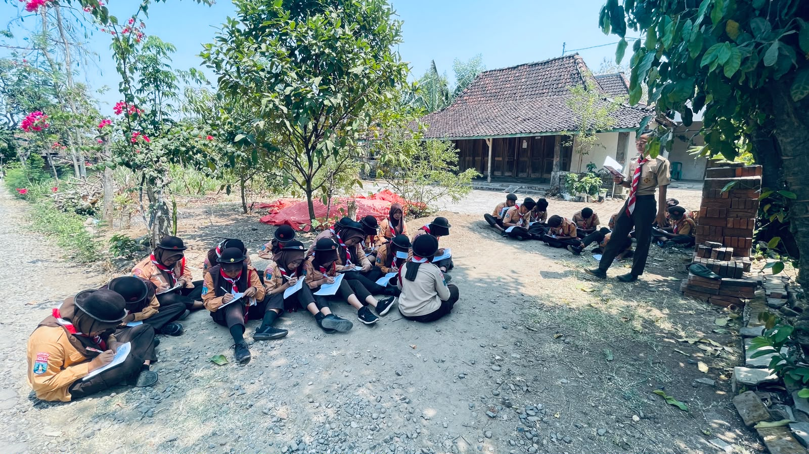
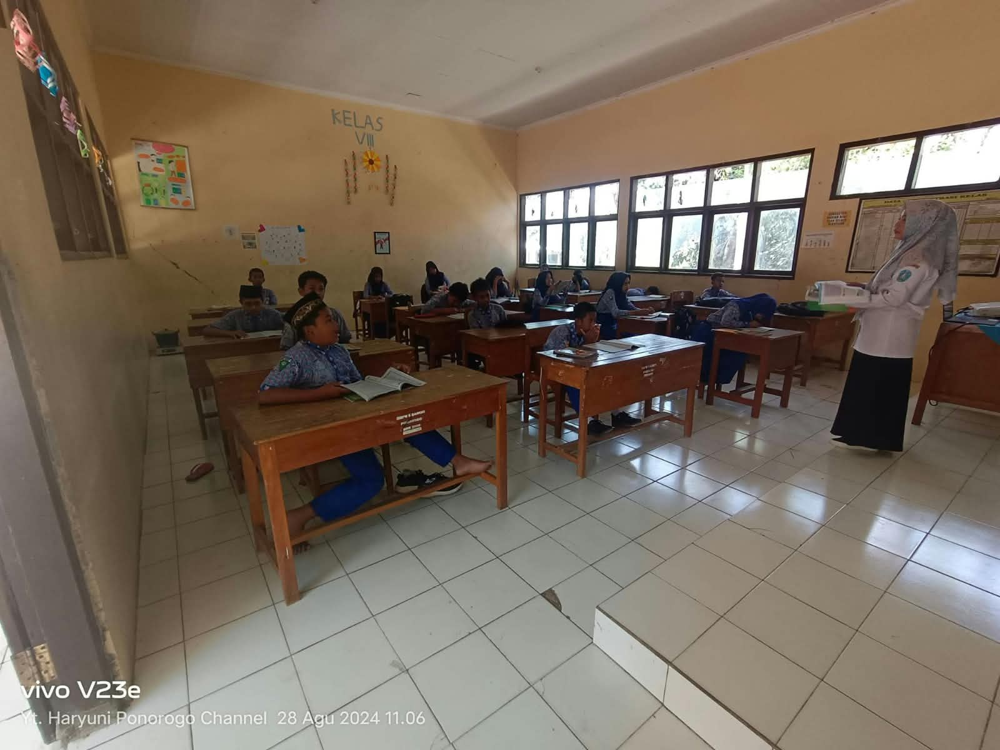
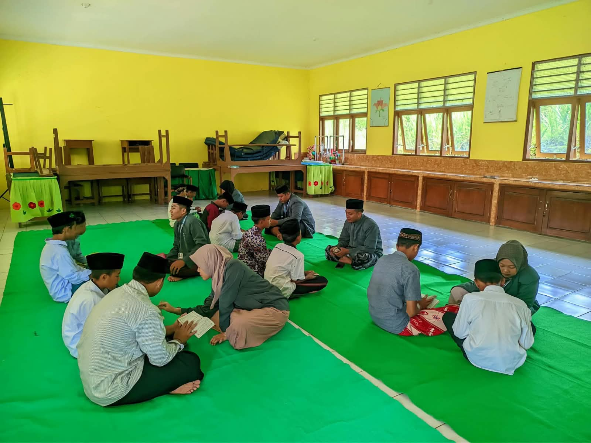

Prestasi
Prestasi dan Kegiatan Siswa SMPN 5 Sawoo
Informasi prestasi dan kegiatan SMPN 5 Sawoo dapat diperbarui sesuai dokumentasi dan pengumuman resmi sekolah.
Sekolah Negeri • Akreditasi B
Selamat datang di SMPN 5 Sawoo. Sekolah negeri di Kecamatan Sawoo, Kabupaten Ponorogo yang berkomitmen mengembangkan potensi akademik, karakter, dan kepedulian terhadap lingkungan.
"Pendidikan menjadi proses untuk mengembangkan potensi, karakter, prestasi, dan kepedulian peserta didik secara berkelanjutan."
Profil Sekolah
SMPN 5 Sawoo merupakan sekolah menengah pertama negeri yang berada di Desa Kori, Kecamatan Sawoo, Kabupaten Ponorogo, Jawa Timur.
SMPN 5 Sawoo menyelenggarakan pendidikan jenjang SMP dengan mengembangkan potensi peserta didik melalui pembelajaran, pembinaan karakter, kegiatan akademik dan nonakademik, serta kegiatan ekstrakurikuler.
"Mengembangkan peserta didik yang berkarakter, berprestasi, peduli lingkungan, serta memiliki iman dan takwa."
Penanaman nilai budi pekerti luhur setiap hari.
Pemanfaatan teknologi untuk mendukung proses pembelajaran.
Program & Kegiatan
Sarana dan kegiatan sekolah diarahkan untuk mendukung proses pembelajaran serta pengembangan minat, bakat, karakter, dan potensi peserta didik.
"Kegiatan pembinaan karakter, kemandirian, dan kerja sama".
"melestarikan warisan budaya tradisional serta membentuk karakter sosial, emosional, dan spiritual melalui harmoni gamelan dan seni suara".
"Terwujudnya peserta didik yang religius, cerdas dalam membaca dan menulis Al-Qur’an, serta berakhlak mulia berlandaskan nilai-nilai Qur’ani."
"Membentuk generasi muda yang unggul, berakhlak mulia, disiplin, dan cinta Al-Qur’an, serta penanaman nilai-nilai Qur’ani."
Informasi Terkini
Prestasi
Informasi prestasi dan kegiatan SMPN 5 Sawoo dapat diperbarui sesuai dokumentasi dan pengumuman resmi sekolah.
Pengumuman
Informasi jadwal, jalur, persyaratan, dan mekanisme penerimaan murid baru dapat diperbarui sesuai ketentuan resmi yang berlaku.
Kegiatan
Ruang informasi untuk mendokumentasikan kegiatan pembelajaran, seni, olahraga, organisasi, dan ekstrakurikuler siswa.
Kumpulan potret kegiatan belajar mengajar, upacara, dan kegiatan ekstrakurikuler siswa.
Kumpulan potret kegiatan belajar mengajar, upacara, dan kegiatan ekstrakurikuler siswa.



Isi berita